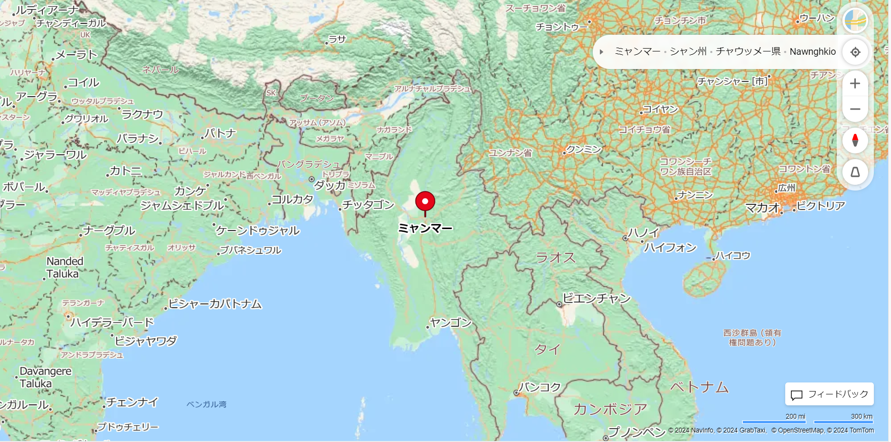
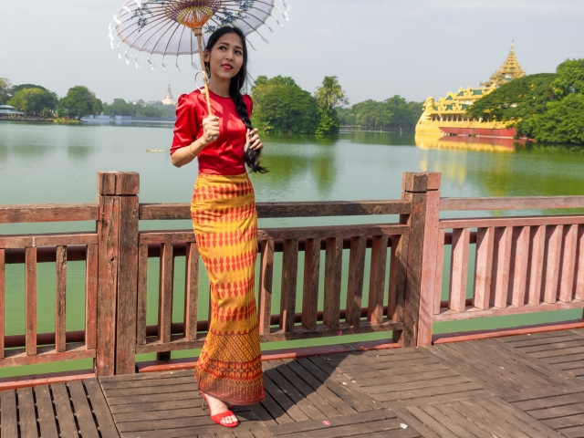
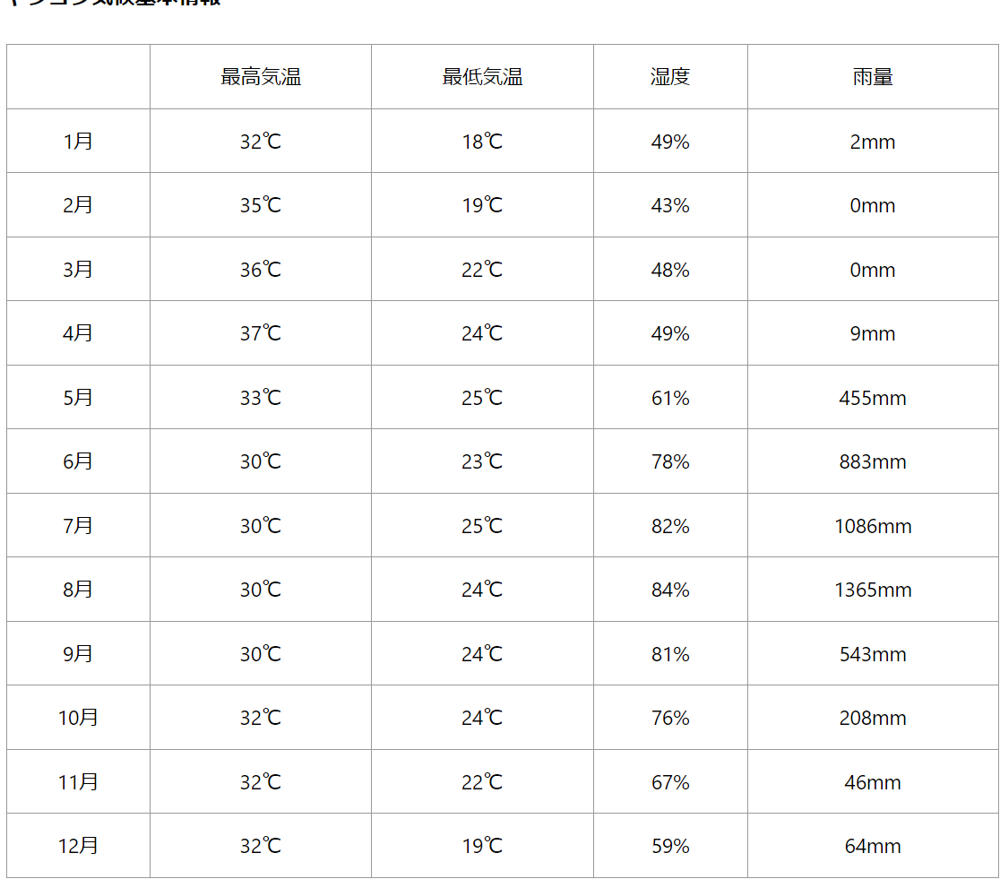
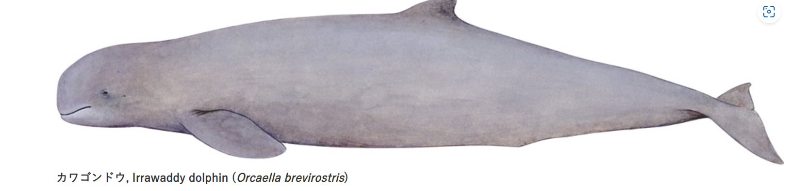
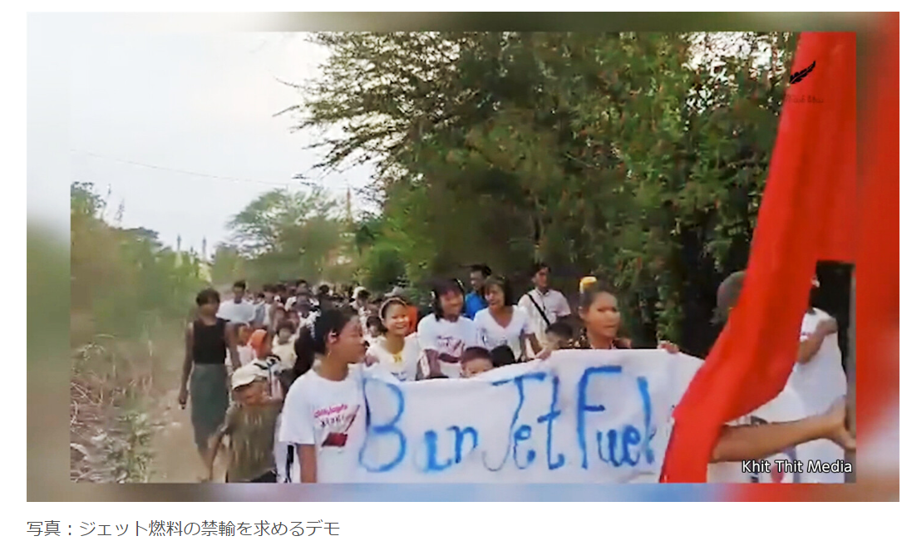
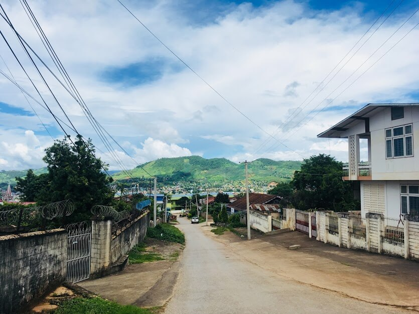
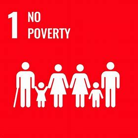

インドシナ半島の西海岸をしめるミャンマーの国土は、日本の約1.8倍の面積を持ち、
南西はベンガル湾、
南はアンダマン海に面する。インドとミャンマーはベンガル湾を挟み相対している
。
国境は、南東はタイ、東はラオス、北東と北は中国、北西はインド、西はバングラデシュと接する。

ミャンマーの民族衣装「ロンジー」
民族衣装ロンジーは様々な種類の布を筒状に縫い、巻きスカートのように着用します。
男性用は「パソー」、女性用は「タメイン」と呼んでいます。

ミャンマーのヤンゴンの気温


全身茶色がかった灰色で腹側はやや明るい。マイルカ科にあって例外的に頚椎の癒合がなく、頚が柔軟なのが特徴的。
口唇部が柔軟で水鉄砲のように口から水を吹き出すことができる。
海棲型はインド、バングラデシュ、ミャンマー、タイ、インドネシア、カンボジア、フィリピンなどで知られているが、
カワゴンドウといわれるようにエーヤワディ川（イラワジ川）、メコン川などの大河にも棲息する。エーヤワディ川（ミャンマー中央部）では、
魚群を追い込むことで漁民と協力することが知られている。
英名直訳でイラワジイルカともいわれる。タイプ標本はインドのヴィシャーカパトナムで収集されたとされるが、この地域は全分布域の西の端のようだ。
2021年2月1日にミャンマーでクーデターが発生
海外からの支援について
300万人いる国内避難民については、ASEANの組織が支援を行なっていますが、これは政府つまり軍が窓口となっているため、
本当に必要としている真に困難な状況にある避難民になかなか行き届きません。
少数民族武装組織や少数民族社会奉仕団体等、国境地域一帯で組織された組織は、長年にわたる経験から、
海外からの支援として国境を超えてのクロスボーダーの必要性を訴えているのですが、今のところ、
大規模な支援は海外から得られていない状況です。

ミャンマーの季節は３つ。乾季、暑季、雨季です。

ミャンマーの気候は東南アジアの多くの国と同じように、高温多湿です。乾季はミャンマーの人からすると、冬。
乾季の時期になると、お店には薄手のダウンコートなどが並びます。

ミャンマーでは長い間軍事政権による鎖国政策が実施され、産業革命や技術の分野、
エネルギー分野では他の国々にかなり後れを取っている。加えて、民主化の遅れにより民族と
国軍との対立が未だに続いている。そのため、国民の社会経済インフラや人間開発が遅れ、指標が50程度になっている。
ミャンマー独自の開発戦略である「ミャンマー持続可能な開
発計画（Myanmar Sustainable Development Plan： MSDP）」も行っている。